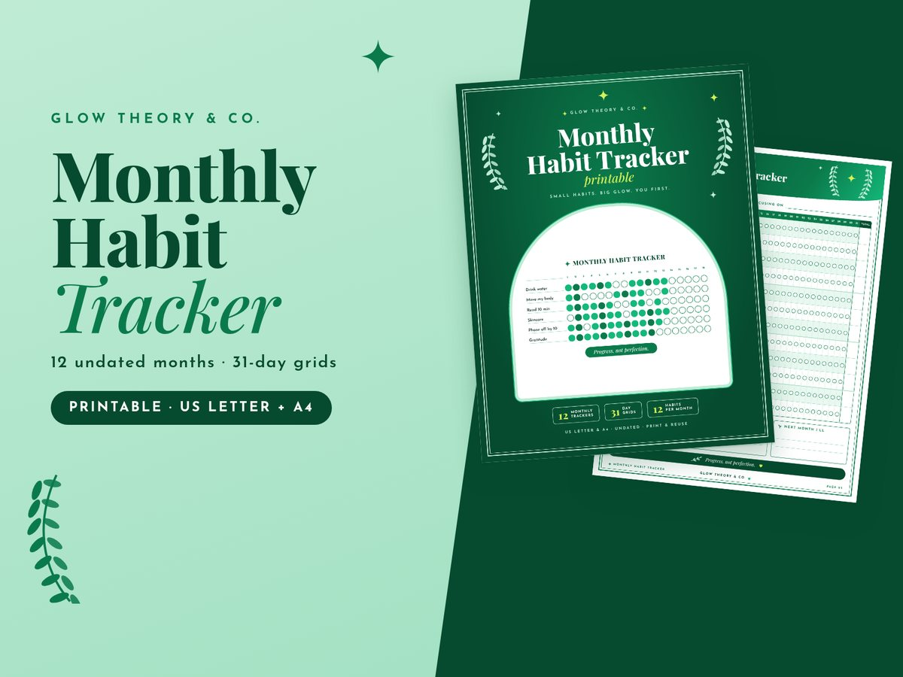

The Monthly Habit Tracker: a full year of small habits, undated
12 monthly trackers with 31-day grids, a year in pixels for your key habit and 48 ideas if you are stuck.

$5
Get it for $5 on Gumroad →17 printable pages · Instant digital download · US Letter + A4 PDF · Made by Glow Theory & Co.
Why this exists
Tracking too many habits at once
Most people start with ten habits and quit by week two. Each tracker has 12 rows, but the how-to page suggests starting with a few and adding more once they stick.
Apps reset your streak and your motivation
Missing one day in an app can feel like starting over. On paper, a missed circle is just one empty circle in a month of filled ones, and the totals column shows real progress.
No way to see the year
The Year at a Glance page summarises each month: focus habit, days done, best streak and a glow rating, plus a 12 x 31 "year in pixels" grid.
How to use a habit tracker (and actually stick with it)
Choose fewer, smaller habits
The most common reason habit trackers fail is too many habits at once. Start with three to five. Make each one small and specific: "read 10 pages" instead of "read more", "phone off by 10pm" instead of "sleep better".
Anchor each habit to something you already do
Habits stick better when they follow an existing routine: stretch after brushing your teeth, write your gratitude line after you pour your coffee. Write the anchor next to the habit on your tracker.
Mark it immediately
Fill the circle the moment you finish the habit, not at night from memory. Keep the tracker somewhere visible, like the fridge, your desk or the inside of a planner you open daily.
Missed a day? Never miss twice
One missed day does not undo a month. The useful rule is simply to not miss two days in a row. On paper, a gap is one empty circle, not a broken streak that resets to zero.
Review monthly and adjust
At the end of each month, total each row. Keep habits that are near-automatic, shrink the ones you kept missing, and add at most one new habit. Over a year, this slow approach builds more lasting change than starting over every January.
Look at the whole year
A year-at-a-glance view shows trends no single month can: the months you were strongest, the seasons that are harder, and how your best streak grew. It is also a good reminder of progress on days that feel stuck.
What's inside
- How to use your tracker: 4 steps, marking key, tips and an example
- 12 undated monthly trackers: 12 habit rows x 31 days with a total column
- Focus line plus notes, wins to celebrate and "next month I'll" boxes on every month
- A different encouraging quote each month
- Year at a Glance: month-by-month summary and a year-in-pixels grid
- Habit Ideas: 48 small habits across Mind, Body, Glow, Home, Money and Digital & joy
How to use it
- Pick 3 to 5 habits. Use the ideas page if needed. Small and specific beats big and vague.
- Fill one circle a day. Mark it the moment you do the habit, so you do not have to remember later.
- Total at month end. Add up each row, note one win and decide what to change next month.
- Update the year page. Copy your focus habit's days into Year at a Glance.
How it compares
| Option | What it covers | Structure | Catch |
|---|---|---|---|
| Single-page tracker | One month | No year view | Reprint and lose history |
| Habit app | Streaks and reminders | Sometimes | A missed day resets the streak |
| Monthly Habit Tracker | 12 months + year review | Yes | Printable, undated |
What you'll like
- A full year in one download, undated
- Year at a Glance and year-in-pixels review
- 48 habit ideas across six areas
- No diet, weight or calorie tracking
Honest catches
- You print it yourself
- 31-day grids mean shorter months leave empty boxes
- Paper has no reminders, so keep it somewhere you will see it
FAQ
Do I have to start in January?
No. All 12 trackers are undated, so start any month.
How many habits per month?
Up to 12 rows. Start with fewer and add more once they stick.
What sizes are included?
US Letter and A4 PDFs.
Can I use it in GoodNotes?
Yes, the PDF works in annotation apps with a stylus.
Is anything shipped?
No, it is a digital download.
No reviews or results are claimed on this page. Personal use only; please don't resell or share the files. This is a planning tool, not medical, financial or mental-health advice.
 The Ultimate Glow Theory Self-Care Bundle
The Ultimate Glow Theory Self-Care Bundle